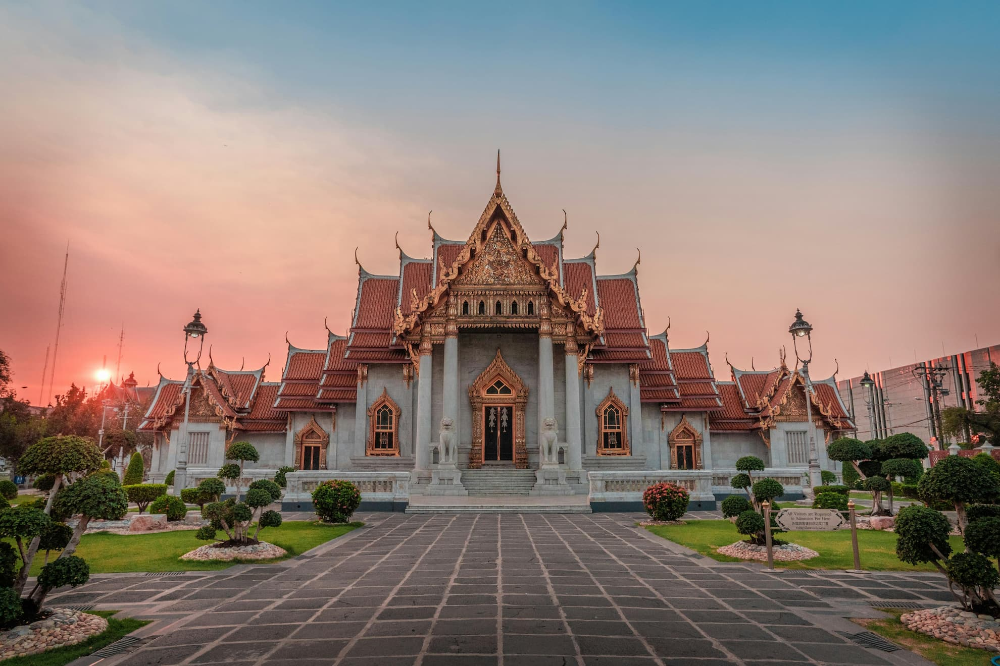
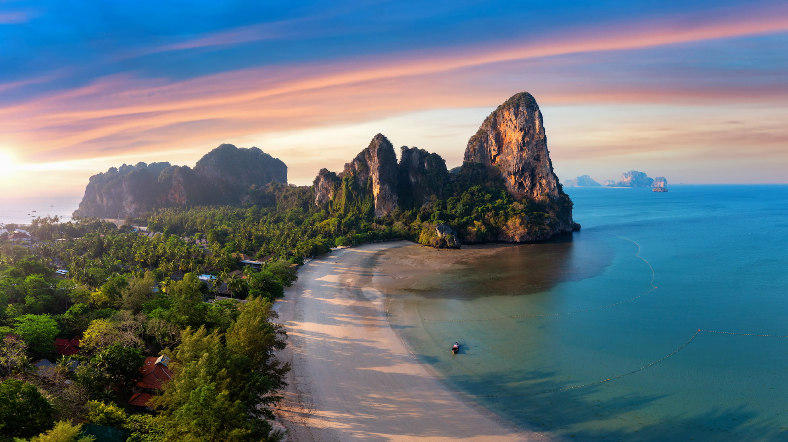
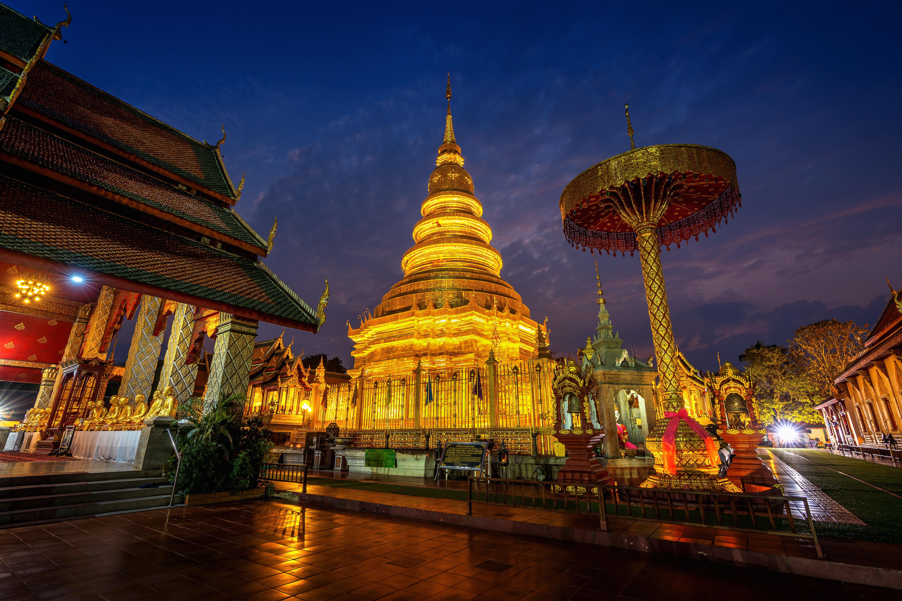
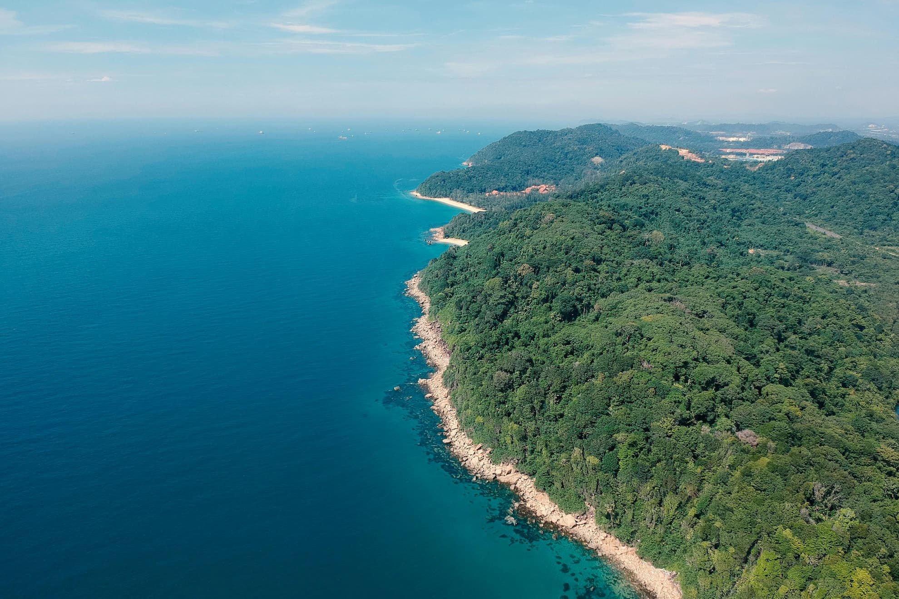
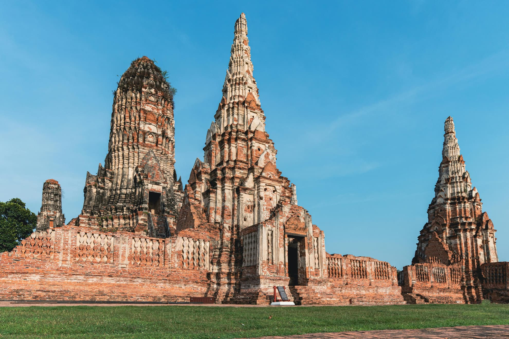
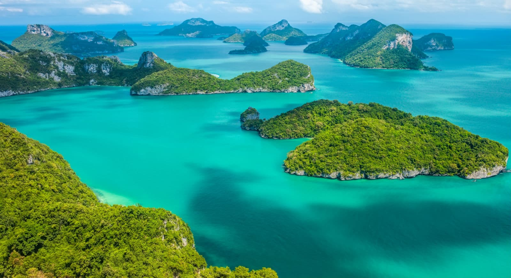

Highlights of Thailand
A selection of the most remarkable places to visit, showcasing the diversity and beauty of the country.
Essential Destinations in Thailand
Explore iconic cities, landscapes, and landmarks
Thailand is one of the world’s most diverse and appealing travel destinations, offering an exceptional combination of cultural heritage, modern cities, natural wonders, and tropical escapes. From ancient capitals and sacred temples to world-class beaches and lush mountain landscapes, the country allows visitors to experience multiple styles of travel within a single journey.
Each region offers its own unique identity, traditions, and atmosphere, giving travelers the opportunity to explore a wide range of experiences. Whether discovering vibrant cities, relaxing on tropical islands, or immersing in local culture, Thailand provides a rich and unforgettable journey for every type of traveler.

Bangkok
Bangkok is the political, cultural, and economic center of Thailand, where tradition and modernity coexist in striking contrast. The city is home to iconic landmarks such as the Grand Palace, Wat Phra Kaew, Wat Arun, and Wat Pho.

Krabi Province
Krabi is known for its outstanding natural scenery and relaxed atmosphere. Towering limestone cliffs rise from the sea, creating some of Thailand’s most iconic landscapes, like the world-famous Railay Beach.

Northern Thailand
Chiang Mai is considered the cultural capital of Northern Thailand and is known for its slower pace and strong connection to traditional lifestyles. The region offers outdoor activities such as trekking and cycling.

Phuket & Andaman
Phuket is Thailand’s most developed island destination, offering a wide range of experiences for all types of travelers. The Andaman Coast is famous for its dramatic limestone cliffs and emerald waters.

Ayutthaya
Ayutthaya provides a deep insight into Thailand’s historical roots. Today, its temple ruins, giant Buddha statues, and archaeological sites form a UNESCO World Heritage Site of immense cultural value.

Gulf Islands
The islands in the Gulf of Thailand, including Koh Samui, Koh Phangan, and Koh Tao, offer a more laid-back coastal experience, famous for wellness tourism and world-class diving.
Ready to explore?
Discover the beauty of Thailand through our carefully planned itineraries or contact us for more information.
View Itineraries